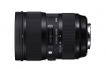

器材库 > 35mm画幅AF变焦镜头 / 24-35/2 DG HSM / Art > 24-35/2 DG HSM | Art

详细规格
镜头类型
超广角变焦镜头
发布日期
2015-06-19
厂家推荐价格
6,380.00 （人民币）
焦距
24-35mm
最大光圈
F2
最小光圈
F16
镜头结构
18片/13组
光圈叶片
9片
最近对焦距离
28cm
最大放大倍率
1:4.4
驱动马达
HSM（超声波马达）
滤镜口径
82mm
镜头卡口
Canon EF, Nikon F, Sigma SA
防抖
否
颜色
黑色
尺寸
87.6×122.7mm
重量
940g
012016-08-04 21:205 分
操作性 5.00耐用性 5.00性价比 5.00解像力 5.00色彩还原 5.00机械结构 5.00
ez82016-01-14 00:315 分
操作性 5.00耐用性 5.00性价比 5.00解像力 5.00色彩还原 5.00机械结构 5.00
产品图 / 样片
评测 / 相关文章
- 详细内容 （存档）
- 新变焦之王者 适马24-35mm F2测评 （存档）
- ［资讯］适马镜头荣获TIPA2016三项大奖 （存档）
- ［资讯］DxO公布适马24-35/2测试成绩 （存档）
- ［资讯］DxOMark公布适马24-35/2成绩 （存档）